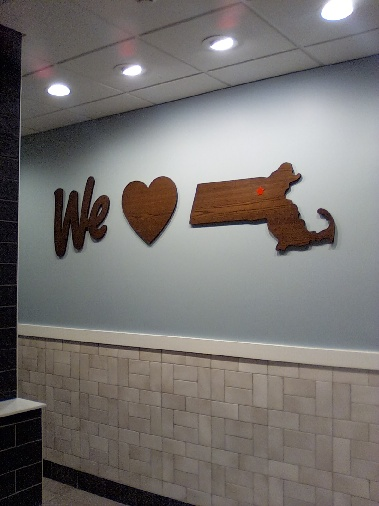

Affilate statement: We may have interest, with companies or products mentioned on this blog.2025 March Blog Posts - 2025年三月部落格文章
#0102 - Login Protected Content Gigantic Difference #0101 - KISS (1 Shell) equals (1 Rumbottle) #0100 - Wall Graph of Your Life with A Friend of Mine Musty Mustard #0099 - We Heart Massachusetts --------------- #0102 2025-03-08 1859 on lemonmama.com By Kissyface Stowaway#0102 - Login Protected Content Gigantic Difference
realized the infinite difference. between a site that login-protects their content. vs. a site that doesn't login-protect their content. because it's simple. if behind a login wall, then anonymous users can't view the content. vs. if not behind a login wall, whether anonymous users can view read the content. there is infinitely more public accountability if there isn't a login wall. examples of REQUIRES login to view in 2024 iirc: twitter/x facebook linkedin examples DOESN'T REQUIRE login to view content in 2024 iirc: mastodon.social reddit stackexcange github youtube (as long as not canceled) rumble.com (user option) substack (user option paywall) medium.com (user option?) and but companies know this. and so they do hybrid stuff that PARTIALLY allows some not-logged in users to view. NOte: this is in some ways even more frustrating. Because it proves the point that the platform/company controls what viewers can/can't view! examples MAYBE/partial requires login to view: linkedin (selectively WITH DIRECT LINK for example) instagram (selectively WITH DIRECT LINK for example) ~ similar posts/drafts. Topics of software/privacy/security etc. Here: C:/Users/mo/Desktop/morgan REDUSB/lemonmama_drafts/2024 and onwards/drafts/2024-08-16 only need to post on one social media site folks.txt C:/Users/mo/Desktop/morgan REDUSB/lemonmama_drafts/2024 and onwards/drafts/2024-12-11 1520 twitter needs logging in to view in 2023.txt https://lemonmama.com/lemonmama/2024/2024%20Dec [...] ember%20Blog%20Posts.html#0065 https://lemonmama.com/lemonmama/2024/2024%20Dec [...] ember%20Blog%20Posts.html#0064 https://lemonmama.com/lemonmama/2024/2024%20Nov [...] ember%20Blog%20Posts.html#0044 https://lemonmama.com/lemonmama/2024/2024-05-04-0629-reset-vs-auto-update.html https://lemonmama.com/lemonmama/2024/2024-02-08-1157-they-all-needed-deleting.html https://lemonmama.com/investorworker/2015/2015-07-04-skype-update-next-restart.html https://lemonmama.com/investorworker/2013.html#2013-10-25_162932 https://lemonmama.com/investorworker/2013.html?2013-10-02#2013-10-02 ~ In conclusion, realized the infinite difference, between a site that login-protects their content. ~~~ --------------- #0101 Affilate statement: We may have interest, with companies or products mentioned on this blog. 2025-03-07 1658 on lemonmama.com#0101 - KISS (1 Shell) equals (1 Rumbottle)
By author Ball Punyin So for example say I want to buy ₿1 Bitcoin and I do buy it for $100 today. And well I note that today's going rate for 1 rum bottle is $15 today. So I don't want to note how much $USD the bitcoin cost, because I frown upon $USD. instead I note how much rumbottles (or Ye Olden Shells) the bitcoin cost. Or else I can use the current price of 1 silver ounce walking liberty. Either one. So say I choose rumbottles. So today that ₿1 Bitcoin cost me 6.66 rumbottles. Sweet. now I know. so in future, no matter the inflation or no matter the value of the dollar. I know that I bought 6.66 rumbottles worth of bitcoin. that is how much I paid for that bitcoin that is in that particular wallet. So if I want to sell that bitcoin say 10 years from now, when the dollar exploded to crap by that time, I won't remember that I paid 100 dollars for tha bitcoin originally. Instead I'll remmber that I had paid 6.66 rumbottles for that bitcoin. So if I sell the bitcoin later, I'll try to sell it for more than 6.66 rumbottles, obviously. And so say that 10 years later at that time, now 1 bottle of rum is selling for USD$55 per bottle. So then I'll calculate how much would be 6.66 times that much. USD$366. So then I'll know my bitcoin should be worth that day $366. because I expect either/or rumbottles and bitcoins will hold their value differently (probably better) than USD will over the next 10 years. I look at the price of 1 bitcoin In conclusion, KISS (1 Shell) equals (1 Rumbottle). tags: Ξ ethereum ₿ bitcoin ~~~ --------------- #0100 Affilate statement: We may have interest, with companies or products mentioned on this blog. 2025-03-06 1102 by Ball Punyin on lemonmama.com#0100 - Wall Graph of Your Life with A Friend of Mine Musty Mustard
A friend of mine, Musty Mustard. Musty Mustard is working on wall graph of your life. And wrenching Musty's brain. Especially around shared work income. And shared expenses. Shared with Musty's spouse. Because at this time it makes so much difference. Without spouse income, actually, Musty and spouse can't cover the expenses. And Musty has this urge to cover the expenses. Wow. Turns out Musty is not experienced at keeping number money records. Not experienced at bookkeeping. The numbers are cold and hard. And yet Musty's mind doesn't want them to be. Subconsciously wants them to work out somehow to be in Musty's favor. So Musty Mustard struggles. Mind struggles staring at the spreadsheet. Trying to figure out how to group/add/subtract the numbers of income and expenses. Make the numbers come out in Musty's favor. However come to find. Musty Mustard can't control the numbers the moment of putting them on the spreadsheet and looking at them. Feels so powerless. So Musty gets in a funk many minutes, maybe an hour or three. But then now. Musty Mustard thinking. Ok look at the numbers. Just Musty's work income only. And but the entire family's expenses. And Musty sees how the income is not enough to cover the expenses. Right. And then Musty sees how Musty's investment income is. Investment income is high now. But then Musty knows the investment income can actually go NEGATIVE on any given month or year (or decade). Musty saw investment income go negative before. However that's not the point. Of the numbers. At the moment Musty is putting the numbers on the spreadsheet. And looking at them. The point of looking at them is just to see them how they accurately are. No judgement for a moment. Then after put the numbers there and graph them. Then after that make a judgement and that will be good. After Musty looks at the numbers then it may become clear what Musty needs to do. Likely it will become clear Musty Mustard will need to increase investing, and decrease expenses, and increase work income. ~~~ --------------- #0099 Affilate statement: We may have interest, with companies or products mentioned on this blog. 2025-03-03 1919 by Morgan Jassen on lemonmama.comWe Heart Massachusetts
We heart massachusetts seen at Wendy's in Maynard ma.  ~~~ --------------- #xxxx 2025-03-xx xxxx by Rowdy Pepper on lemonmama.com#xxxx - Blah Blah Blah Title Goes Here - Episodic Series xxx
First Sentence here... Body text goes here... More Body text... More Body text... In conclusion, ... ~~~ Copyright © under a triple license to the individual author and to lemonmama.com and to MIT License.
{kind=link}